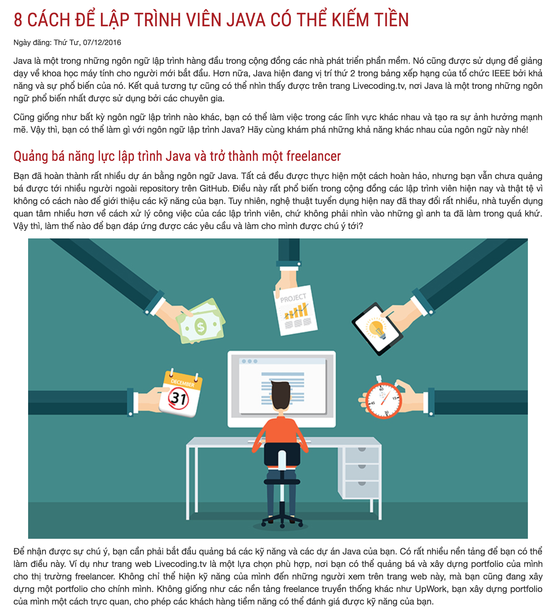

Ngày đăng: Thứ tư, 07/02/2016
Java là một trong những ngôn ngữ lập trình hàng đầu trong cộng đồng các nhà phát triển phần mềm. Nó cũng được sử dụng để giảng dạy về khoa học máy tính cho người mới bắt đầu. Hơn nữa, Java hiện đang vị trí thứ 2 trong bảng xếp hạng của tổ chức IEEE bởi khả năng và sự phổ biến của nó. Kết quả tương tự cũng có thể nhìn thấy được trên trang Livecoding.tv, nơi Java là một trong những ngôn ngữ phổ biến nhất được sử dụng bởi các chuyên gia.
Bạn đã hoàn thành rất nhiều dự án bằng ngôn ngữ Java. Tất cả đều được thực hiện một cách hoàn hảo, nhưng bạn vẫn chưa quảng bá được tới nhiều người ngoài repository trên GitHub. Điều này rất phổ biến trong cộng đồng các lập trình viên hiện nay và thật tệ vì không có cách nào để giới thiệu các kỹ năng của bạn. Tuy nhiên, nghệ thuật tuyển dụng hiện nay đã thay đổi rất nhiều, nhà tuyển dụng quan tâm nhiều hơn về cách xử lý công việc của các lập trình viên, chứ không phải nhìn vào những gì anh ta đã làm trong quá khứ. Vậy thì, làm thế nào để bạn đáp ứng được các yêu cầu và làm cho mình được chú ý tới?
